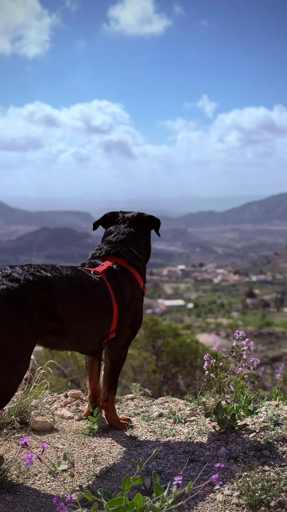

El Rottweiler es una raza de trabajo con gran energía y musculatura. Necesita ejercicio físico diario, pero también estimulación mental — un Rottweiler aburrido puede volverse destructivo o ansioso. La cantidad varía según la edad.
Ejercicio recomendado por edad
Cachorro
5 minPor mes de vida, dos veces al día. Un cachorro de 4 meses: 20 min máximo. Evitar impactos y saltos.
Adulto
1-2hAl día repartidas en 2-3 salidas. Combinar paseo tranquilo con actividad más intensa.
Senior +7 años
45-60 minAl día con ritmo suave. Paseos cortos y frecuentes. Evitar impacto en articulaciones.

Actividades recomendadas para Rottweiler
- Paseos con exploración — dejar que olfatee es estimulación mental. Un paseo de 30 min con olfateo cansa más que uno de 1h sin parar.
- Natación — ejercicio ideal para la raza. No impacta las articulaciones y trabaja toda la musculatura.
- Juegos de búsqueda — esconder premios o juguetes en casa o en el jardín. Estimulación mental pura.
- Obediencia y trucos — 10-15 minutos de entrenamiento mental cansa tanto como 30 minutos de paseo físico.
- Senderismo — el Rottweiler es un gran compañero de montaña. Maya lo demuestra en cada vídeo.
- Canicross — correr junto al dueño con arnés especial, ideal para perros adultos bien desarrollados.
⚠️ Cachorros: nunca fuerces el ejercicio. Sus articulaciones y huesos están en desarrollo hasta los 18-24 meses. Ejercicio excesivo en esta etapa puede causar displasia y problemas articulares permanentes. 👉 Aprende todo sobre la displasia en Rottweiler
Lo que NO debes hacer
- Ejercicio intenso justo antes o después de comer — riesgo de torsión gástrica
- Saltar obstáculos altos en cachorros — daña las articulaciones en desarrollo
- Correr en asfalto durante mucho tiempo — daña las almohadillas y articulaciones
- Ejercicio en horas de máximo calor — el Rottweiler sufre con las altas temperaturas por su pelaje oscuro y masa corporal
- Cero ejercicio — un Rottweiler sin actividad desarrolla ansiedad, destrucción y comportamientos problemáticos
💡 La combinación ganadora: paseo matutino tranquilo de 20-30 min + sesión de obediencia o juego mental de 15 min + paseo vespertino más activo de 45-60 min. Maya sigue esta rutina y es un ejemplo de equilibrio. 🐾
¿Puede vivir un Rottweiler en un piso?
Sí, perfectamente — siempre que tenga suficiente ejercicio diario. El Rottweiler no necesita jardín, necesita salir. Muchos Rottweiler viven en pisos de ciudades grandes y son perros completamente equilibrados gracias a paseos consistentes y estimulación mental.